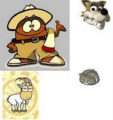
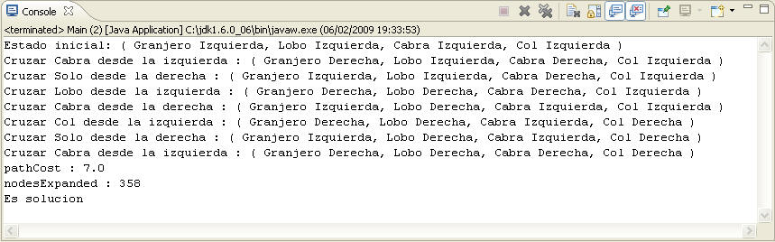

|

Un barquero quiere pasar de una orilla a otra del río a su
lobo, su cabra y un saco de coles, y en la barca sólo caben él y una
de las tres cosas. El barquero sabe que si deja solos al lobo y a la
cabra, el lobo se comerá a la cabra. Si deja a la cabra junto al
saco de coles, la cabra se comerá las coles.
- Cruzar solo desde la derecha: Si el baquero esta en la
orilla derecha del río
- Cruzar solo desde la izquierda: Si el baquero esta en la
orilla izquierda del río
- Cruzar con el lobo desde la derecha: Si el barquero y el
lobo están en la orilla derecha del río, y la cabra no está en
la misma orilla que la col.
- Cruzar con el lobo desde la izquierda: Si el barquero y el
lobo están en la orilla izquierda del río, y la cabra no está en
la misma orilla que la col.
- Cruzar con la cabra desde la derecha: Si el barquero y la
cabra están en la orilla derecha del río.
- Cruzar con la cabra desde la izquierda: Si el barquero y la
cabra están en la orilla izquierda del río.
- Cruzar con la col desde la derecha: Si el barquero y la col
están en la orilla derecha del río, y la cabra no está en la
misma orilla que el lobo.
- Cruzar con la col desde la izquierda: Si el barquero y la
col están en la orilla izquierda del río, y la cabra no está en
la misma orilla que el lobo.
Algoritmo IterativeDeepeningSearch o Profundidad
Iterativa: Combina los algoritmos de búsqueda primero en anchura y
primero en profundidad. Resulta útil para espacio de estados grandes
y cuando la profundidad de la solución se desconoce, ya que ésta
varia de forma creciente.

Estado ( Granjero, Lobo, Cabra, Col )
Granjero = True v False
Lobo = True v False
Cabra = True v False
Col = True v False
Estados inalcanzables:
Estado( Granjero derecha, Lobo izquierda, Cabra izquierda, Col izquierda )
Estado( Granjero derecha, Lobo derecha, Cabra izquierda, Col izquierda )
Estado( Granjero derecha, Lobo izquierda, Cabra izquierda, Col
derecha)
Estado( Granjero izquierda, Lobo izquierda, Cabra
derecha, Col derecha)
Estado( Granjero izquierda, Lobo
derecha, Cabra derecha, Col izquierda )
Estado( Granjero izquierda, Lobo
derecha, Cabra derecha, Col derecha)
Estado inicial:
Estado( Granjero izquierda, Lobo izquierda, Cabra izquierda, Col izquierda ) Estado final:
Estado( Granjero derecha, Lobo derecha, Cabra
derecha, Col derecha) |